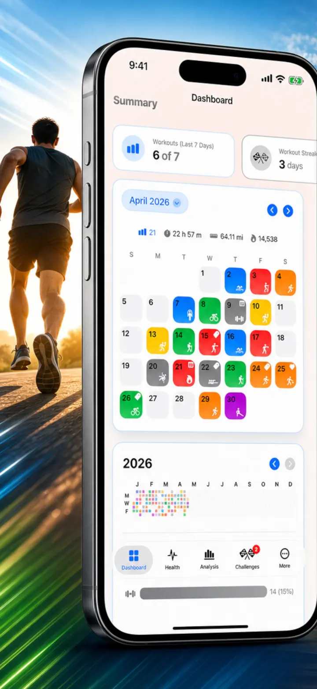
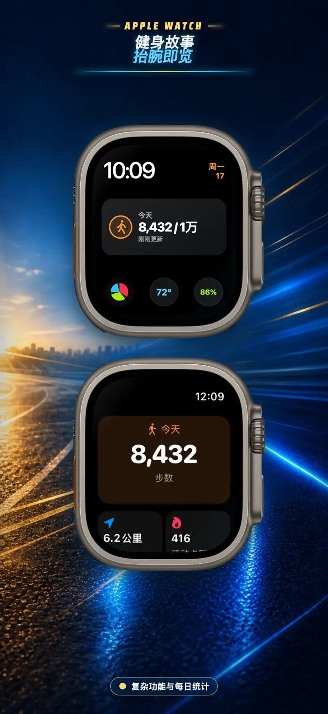
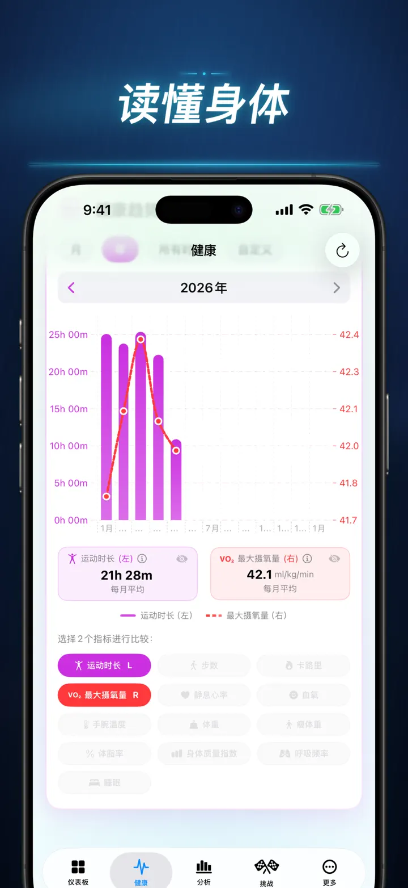
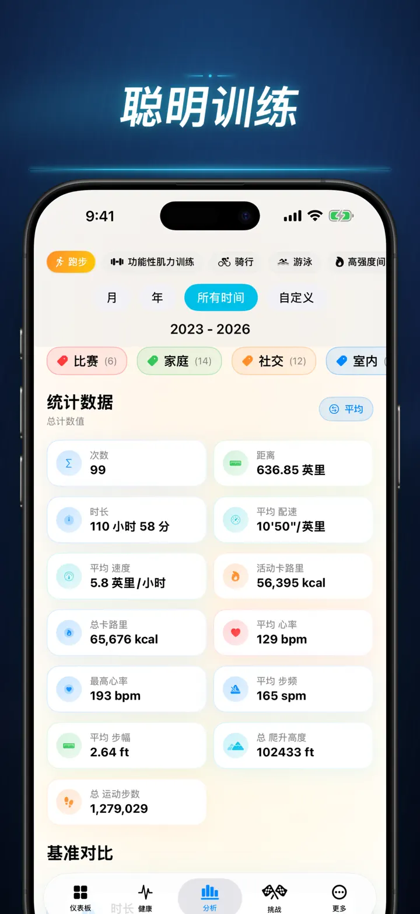
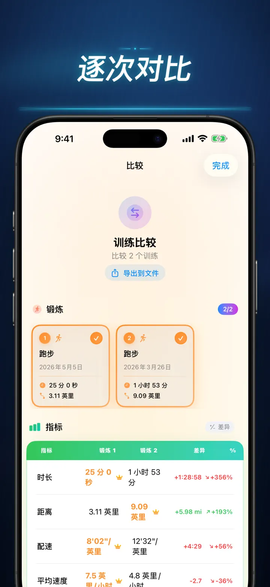
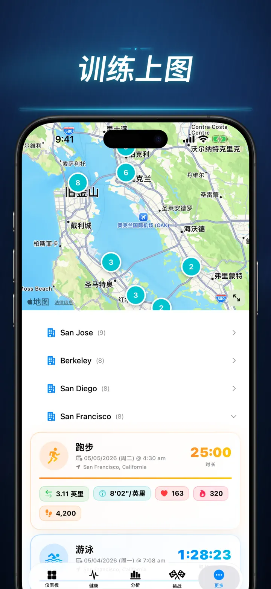

健身故事
解锁你的运动洞察，挑战自我，让数据发声。
现已登陆 Apple Watch：任意表盘都能看到今天的步数，「今天」页面还有距离、卡路里与上楼层数——数据直接读自 Apple 健康。
从 App Store 下载
关于本应用
别再靠猜了，用数据说话。健身故事将你的 Apple 健康数据转化为 iOS 上最强大、最精细的运动分析工具。无需注册，不经任何服务器，你的全部健身旅程，尽在眼前。
无论你在追踪睡眠阶段、分析跑步步频，还是冲击马拉松 PR，这就是你的汗水配得上的全能仪表盘。
支持任何会同步到 Apple 健康的设备或应用——Apple Watch、Garmin、Polar、Suunto、Zwift 等。
专业级分析
- 趋势与基准图表：通过箱线图查看每种运动类型的中位数、四分位数与异常值。
- 精细筛选：按时段、距离范围、时长、配速区间、爬升高度、步频和步幅筛选历史记录。
- 一键排名：轻触一下，将今日指标（距离、配速、心率等）与全部历史进行比较。立刻知道自己是否达到了「前 15%」的水平！
- 贡献图表：GitHub 风格的热力图，完整展现你的运动历史。翻转即可查看每日详细数据。
训练细节全面升级
- 智能地图：按速度、海拔或心率区间为户外路线着色。（支持中国地图纠偏）。
- 深度分段分析：查看每一圈的公里或英里分段数据，包含配速、海拔、心率与步频。
- 心率区间：根据你的年龄与静息心率，可视化在自定义区间 1–5 的停留时间。
- 丰富记录：为每次训练添加照片、富文本笔记、费力程度评分（1–10）及自定义标签。
全方位健康指挥中心
- Apple Watch 测量的所有数据，在同一页面以日、周、年趋势呈现：
- 心血管健康：静息心率、VO2 Max（年龄校正）、血氧饱和度与呼吸频率。
- 身体成分：体重、体脂率、去脂体重与 BMI，附趋势指标。
- 活动与恢复：步数（含每小时分布）、主动 vs. 基础代谢卡路里、腕温偏差。
- 进阶睡眠追踪：深度、核心、REM 与清醒阶段，逐夜可视化。
- 关联叠加：叠加多项健康指标，看看睡眠如何影响心率，体重如何影响 VO2 Max。
比较与竞争
- 训练比较：选取最多 10 次训练并排比较。查看每项指标、每个分段的差异百分比（例如「+1.5% 更快」）！
- 比较导出：想用其他工具分析？导出你的训练比较数据！
- 个人记录：自动追踪 1K、5K、10K、半马、全马及自定义距离。赢得金、银、铜奖杯。
- 故事时间线：按时间顺序展示你完成的每一个里程碑、记录和训练。
你的数据，随处可及
- 全球地图：在交互式聚合世界地图上，查看你曾运动过的每一个地点。
- 强大导出：将完整历史（或自定义范围）导出为 CSV 或 JSON，包含完整分段数据、身体指标与元数据。
- iCloud 同步：你的收藏、标签、笔记与评分，即时同步至所有设备。
- 隐私至上：没有隐藏服务器。你的数据只存在于你的设备和私人 iCloud 中。
- 你的每一滴汗水都有故事。是时候翻开它了。立即下载健身故事。
下载健身故事，解锁你的运动洞察！
Privacy Policy: https://masawata.net/privacy-policy.html Terms Of Service: https://www.apple.com/legal/internet-services/itunes/dev/stdeula/
屏幕截图





健身故事
现已登陆 Apple Watch：任意表盘都能看到今天的步数，「今天」页面还有距离、卡路里与上楼层数——数据直接读自 Apple 健康。
从 App Store 下载